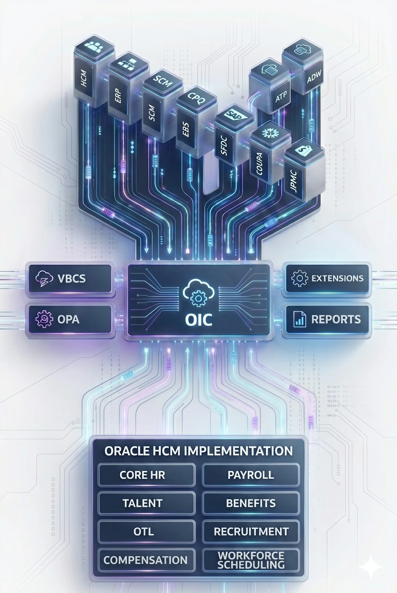

Empowering enterprises with deep Oracle PaaS and HCM expertise — from strategy to execution. Accelerate transformation with certified architects and hands-on experts who deliver real business outcomes across OIC, Fusion HCM, APEX, VBCS, and more.

Explore our Oracle Cloud consulting practice areas
OIC, VBCS, OPA, APEX, ODI, IDCS, CPQ — deep Oracle platform skills.
End-to-end from architecture & strategy through implementation, migration, managed services, and training.
Full hire-to-retire HCM Cloud — Core HR, Payroll, Recruiting, Talent, Absence, and more.
Purpose-built tools — DataForge, PayForge, ValueForge — to fast-track your HCM journey.
One-click deployment, auto TDD, flow diagrams, Postman generation, AI error analysis and real-time monitoring.
Who we are, why organizations trust us, and the clients we work with.
Answers to common questions about our Oracle consulting engagements and approach.
Let's discuss how our expertise can drive your digital transformation.
End-to-end integration services connecting SaaS, on-premise, and custom applications. Real-time, batch, and event-driven patterns.
Low-code web & mobile app development. Extend Oracle SaaS or build standalone apps with modern UI and seamless APIs.
Intelligent process automation and workflow orchestration to streamline operations and reduce manual overhead.
Rapid development of scalable, secure web applications using low-code APEX. Expertise in building data-driven apps, dashboards, and custom solutions on Oracle Database.
Expertise in Oracle Fusion technical components across HCM, ERP, and SCM. BI Publisher, OTBI, HDL/HSDL, Fast Formula, data migration, and technical support for enterprise implementations.
Custom-built add-ons and integrations that expand what your SaaS platform can do — tailored to fit your unique business needs.
High-performance data integration and ELT solutions for large-scale data movement, transformation, and synchronization across enterprise systems.
Prebuilt analytics and dashboards delivering actionable insights across Finance, HCM, and SCM with KPI tracking and advanced reporting.
Next-gen analytics platform enabling unified data insights, advanced modeling, and AI-driven business intelligence across Oracle Fusion applications.
Identity and access management, SSO, MFA, and user lifecycle governance for hybrid cloud environments.
Configure-Price-Quote implementation and optimization. Complex pricing, guided selling, and quote-to-order automation.
Let's discuss how our expertise can drive your digital transformation.
We partner with you from discovery to go-live and beyond
Enterprise architecture assessments, roadmap definition, and solution blueprinting tailored to your business goals.
Full-cycle implementation: design, configuration, custom development, testing, and deployment with CI/CD best practices.
SOA/OSB to OIC migrations, OIC Gen2 to Gen3 upgrades, PCS to OPA modernization, and cloud adoption strategies.
Empower your internal teams with workshops, hands-on training, and comprehensive documentation for sustained success.
Ongoing monitoring, incident resolution, performance tuning, and proactive maintenance for your Oracle landscape.
Hardening, role design, audit readiness, and compliance with industry standards across Oracle Cloud.
Experience that delivers measurable results
With over a decade of hands-on experience implementing enterprise-scale Integration solutions, IntSphere delivers sophisticated integrations backed by proven expertise.
History of successful Oracle Cloud transformations across HCM, ERP, and integration landscapes — delivered on time, on scope, and with measurable ROI for clients worldwide.
We act as an extension of your team, focused on long-term value, not just project completion. From discovery through go-live and beyond, we stay invested in your success.
Reduced time-to-market, lower total cost of ownership, and scalable architectures that grow with your business — we measure success by the impact we create, not just delivery milestones.
Let's discuss how our expertise can drive your digital transformation.
End-to-end Human Capital Management — from core HR records to payroll, recruiting, talent management, and time & labor. We deliver the full hire-to-retire lifecycle on Oracle Fusion HCM Cloud, including complex guided onboarding, payroll compliance, and workforce automation.
Our HCM specialists are ready to discuss your requirements and design the right approach.
Oracle Cloud specialists dedicated to your success
IntSphere is a specialized Oracle Cloud consulting firm dedicated to helping enterprises maximize their Oracle investments. With decades of combined Oracle expertise, we deliver strategic advisory, implementation, and managed services across the Oracle ecosystem.
🎯 Our mission: Deliver exceptional Oracle solutions through deep expertise and unwavering client partnership.
We combine deep technical mastery with business acumen to deliver solutions that drive real value. From initial discovery through post-implementation support, our consultants work alongside your teams to ensure knowledge transfer, best practices, and sustainable success.
The result: ✅ Faster time-to-value, reduced operational costs, and empowered internal teams ready for the future.
Experience that delivers measurable results
With over a decade of hands-on experience implementing enterprise-scale Integration solutions, IntSphere delivers sophisticated integrations backed by proven expertise.
History of successful Oracle Cloud transformations across HCM, ERP, and integration landscapes — delivered on time, on scope, and with measurable ROI for clients worldwide.
We act as an extension of your team, focused on long-term value, not just project completion. From discovery through go-live and beyond, we stay invested in your success.
Reduced time-to-market, lower total cost of ownership, and scalable architectures that grow with your business — we measure success by the impact we create, not just delivery milestones.
Collaborating with enterprise Oracle teams
Let's discuss how our expertise can drive your digital transformation.
Smart Data Migration Tool for Oracle Fusion HCM
A powerful, purpose-built accelerator designed to seamlessly migrate HR data from legacy systems into Oracle Fusion Cloud HCM.
Smart Payroll Data Validation Engine
Automatically compares legacy payroll data with Oracle Fusion HCM Payroll, highlights discrepancies, and delivers fast, accurate reconciliation results.
Post Go-Live Value Acceleration Engine
We deploy up to 2 custom HCM components after hypercare to simplify HR operations, improve user adoption, and deliver immediate business value.
Get in touch to learn how DataForge, PayForge, and ValueForge can fast-track your Oracle HCM journey.
Our team is happy to discuss your specific Oracle Cloud requirements and how we can help.
Built from real Oracle Integration Cloud project pain — not a lab experiment.
Teams spend hours manually creating technical design documentation and Postman collections. Integration migrations cause missing lookups or incomplete configs. Monitoring OIC health, analysing Fusion Reports, and checking user roles are scattered across different platforms. Unified analytics on OIC and Fusion is nearly impossible.
Integration operations are fragmented. Teams manually create documentation. Monitoring is scattered across OIC, Fusion, and IDCS. Error analysis lacks context. Getting a single pane of glass across your Oracle landscape is a daily struggle.
IntSphere consolidates fragmented integration operations into one platform — automatically generating TDDs and Postman collections, standardising migrations, centralising OIC and Fusion monitoring, and delivering unified analytics on integration performance, health, and user roles.
A comprehensive suite of tools to enhance your Oracle Integration Cloud and VBCS operations
Deploy integrations instantly with automated processes and reduce manual deployment errors. Promote across DEV → TEST → PROD with a single action, complete with pre-flight validation checks.
Automatic Technical Design Document generation for your OIC integrations and VBCS applications. Produce audit-ready documentation in minutes, not days — structured, consistent, and always up to date.
Visual representation of integration flows auto-generated for better understanding and documentation. Share clear, professional integration maps with stakeholders without manual drawing.
Automated Postman collection and test case generation for your OIC integrations at your fingertips. Comprehensive API testing from day one — no manual collection building required.
Track environment health, integration performance, and BIP report execution with comprehensive dashboards. Get full visibility across your Oracle landscape in one screen.
Compare user roles and access permissions across the same and different Fusion environments seamlessly. Identify discrepancies and ensure role consistency across DEV, TEST, and PROD instantly.
Track Enterprise Scheduling Service job execution history and Business Intelligence Publisher report runs with predictive insights and analytics. Know what ran, when, and why it failed.
Track error patterns over time to identify recurring issues and optimise system performance. Spot systemic problems before they escalate and benchmark improvement over time.
Streamline team workflows with assignment, notification, and handover features. Keep everyone aligned on integration status, incident ownership, and deployment pipelines.
Test Fusion APIs directly from within the platform — no external tools needed. Validate endpoints, inspect responses, and debug integration issues without leaving your workspace.
AI-driven insights and automation to boost productivity, reduce manual effort, and surface root causes faster than ever
Generate comprehensive Technical Design Documentation for Visual Builder Cloud Service applications using AI. Review VBCS apps and receive code quality recommendations instantly — no manual analysis needed.
Analyse failed File-Based Data Import and HCM Data Loader files with intelligent AI assistance. Identify root causes, understand field-level errors, and get actionable fix recommendations in seconds.
Compare error analysis responses from different LLM models side-by-side for deeper insights and more informed decision-making. Choose the model that best fits your context — GPT, Claude, or others.
Automated error root-cause identification and resolution recommendations powered by multi-LLM analysis. Stop guessing — get precise, actionable guidance for every OIC integration failure.
Intelligent classification of OIC integration errors by type, severity, and frequency for better prioritisation and incident management. Triage faster and focus your team on what matters most.
AI-assisted role analysis and access anomaly detection across Fusion environments. Proactively surface over-privileged users, segregation-of-duties conflicts, and configuration drift before audits do.
Measurable outcomes for Oracle integration teams — from day one
One-click promotion eliminates manual deployment steps and rollback risk.
AI-generated TDDs and flow diagrams replace days of manual effort.
OIC, Fusion, IDCS, ESS, BIP — all monitored from a single dashboard.
Multi-LLM root cause analysis surfaces fixes before manual debugging starts.
Whether you're a global enterprise or a growing mid-market company — if you run Oracle Cloud integrations, IntSphere Platform is for you
Spend more time building integrations and less time on documentation, Postman setup, and deployment scripts. Auto-generate what used to take days.
Monitor OIC environment health, track scheduled integrations, and resolve errors faster with AI-powered root cause analysis and historical trend data — all in one place.
Audit user roles across environments, compare permissions, and detect security anomalies without logging into multiple systems. Stay audit-ready at all times.
Get management-level visibility into Oracle Cloud operations — deployment cadence, error rates, scheduled job health, and team productivity in one executive dashboard.
Book a demo and watch how teams reduce OIC deployment time by 70% and eliminate manual documentation overnight.